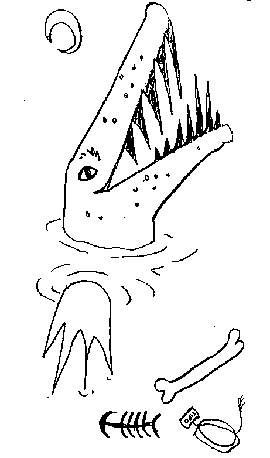
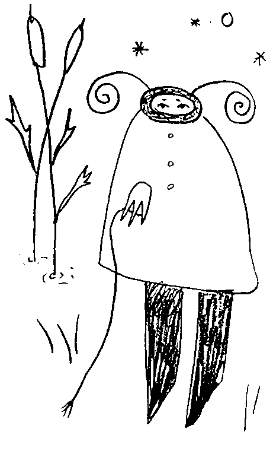

How to Survive an Encounter with a Crocodile or Alligator
Crocodilians–alligators, crocodiles, caimans, and their kin kill hundreds of people each year. While most of these attacks occur in Africa and Asia, these powerful reptiles are also found in parts of South America, Australia, Mexico, and the southern United States.
Crocodilians typically do not include humans in their diet,
but in truth they will eat just about anything if given the opportunity!
They will also defend their territory vigorously, especially during mating season. The best way to stay safe in these animal's habitats is to give the creatures space and exercise caution around water where they may live.
In the event that you are attacked, you may be able to survive if you fight back strategically. Learn where crocodilians live and
stay away.
The only sure way to survive an encounter with a crocodile or alligator is to never meet one in the first place.
Crocodilians live in tropical regions of Africa, Asia, the Americas and Australia, and depending on the species, can live in both fresh and saltwater. If you live in or visit a tropical region, ask local residents and authorities about the presence of crocodiles, alligators, or caiman before approaching any bodies of water. Take warning signs about the presence of crocodiles seriously. Never go swimming outside of designated areas in regions where crocodilians are known to live.
If a potential swimming area is unmarked, do not assume that it is safe.
Interestingly, almost 95% of recent crocodile attacks in northern Australia have involved locals.
Use extreme caution around water where crocodilians live. Over 90% of crocodile attacks occur in or near the water and you must use extreme care to avoid them. Crocodilians usually live in and around slow-moving water with a lot of mud and vegetation, and can most often be found in swamps and marshes. They can also inhabit lakes, ponds, rivers, estuaries, man-made canals and
the occasional swimming pool.
Remember that crocodilians are experts at hiding,
and even a giant croc might show nothing more than its nostrils above the surface of the water. Be especially wary around muddy or murky water, and where vegetation is present.
It's safest to assume that even if you can't see the crocodilians,
they are still there.
Keep your distance from the water when walking on the shore, and avoid patches of vegetation where these animals could hide. An alligator that feels threatened may hiss at you. If you hear a hissing alligator, try to determine where the sound is coming from, and then leave in the opposite direction as quietly and quickly as you can. Do not walk your dog near alligator or crocodile habitats. Crocodilians are attracted to the sound and movement of small animals,
If you do walk your dog near the water, keep it on a leash and be on guard for any movement on or near the water. Do not allow small children to play near the water's edge, or remain unattended in crocodilian country.
Feeding these animals teaches them to lose their natural wariness around people and to associate people with food. Never feed them intentionally, and be careful not to feed them accidentally by throwing fish scrap and other edible refuse into the water. Only feeding young animals is not OK. Remember that a 2-foot long alligator will eventually grow up to be a 10-foot long alligator that might still expect humans to feed it.
If you do spot a crocodilian, keep as far from it as possible. Crocodilians can also launch themselves vertically from the water. Don't stand on docks or low bridges over water, or lean over the side of boats or hang from trees over infested waters.
Occasionally crocodilians wander into populated areas, especially when people live very close to the water. If you encounter a crocodilian in your backyard, pool, etc. first get to safety and then call the local authorities.
If you fall into water where crocodilians live, remain
calm.
Splashing around and shouting attracts attention from crocodilians and may incite them to attack.
Swim or wade to the shore as
quickly,
quietly
and
calmly
as you can, preferably staying below the water's surface to avoid splashing. If you spot a crocodilian on land, stay calm and depart the area slowly. Do not try to approach the animal, attack it, or try to move it. If you spot one of these animals in a populated area, such as a backyard or parking lot, first get to a safe distance from the animal and then call local wildlife authorities to have it removed.
Should you accidentally happen upon an alligator or crocodile, or if one begins to move towards you, run away from the animal as quickly as you can. As fast as they are in the water, the top land speed for a crocodilian is only 17kmh (10 mph), a speed that most humans can surpass over short distances.
Be sure to run away from the water to avoid running into the jaws of more crocodilians.
Forget the conventional wisdom about running in a zig-zag pattern to escape; the quickest way to escape an alligator or crocodile is in a straight line.
This is because humans (and other animals) run faster in straight lines.
Do your best to stay calm and fight back strategically. While the very notion of remaining calm during an animal attack may seem preposterous, doing so may be the only thing that saves your life. If the crocodilian merely bites you at first and lets go, this is probably a defensive attack.
Don't wait or try to attack it, just run away as quickly as you can.
If the animal seizes hold of you, however, it will likely try to drag you into the water.
In this case, you will need to attack it until it lets go.
Attack the animal's eyes.
The eyes of the crocodilian are its most vulnerable part, and several croc-attack survivors have reported eye-gouging as their salvation.
Attempt to gouge, kick, or poke the animal in the eye with your hands or whatever you can grab.
Don't give up until you are free,
you are literally fighting for your life.
Attack the animal's head.
If you land
as many blows as possible
on the animal's head, you stand a higher chance that it will let go.
Bystanders observing a crocodilian attack can assist by striking at the animal with sticks, poles, oars, etc., and by kicking and even punching the animal, especially in the head.
